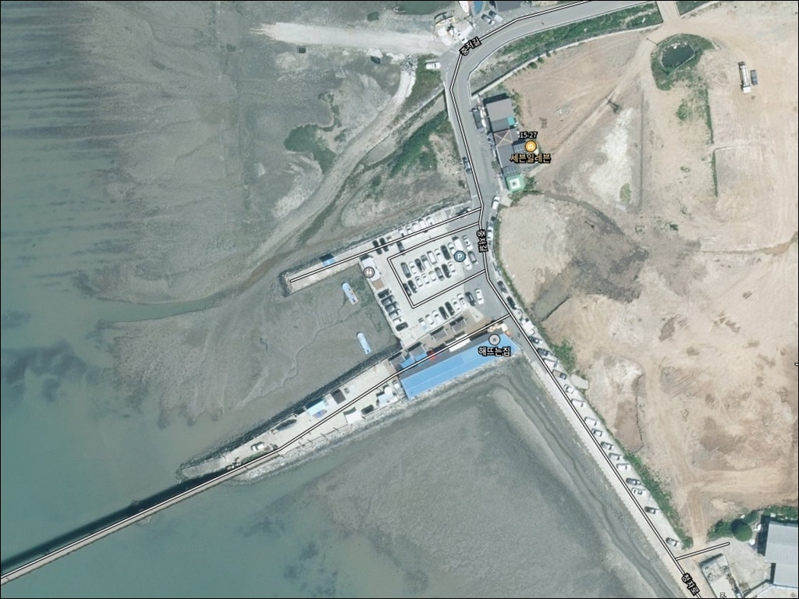
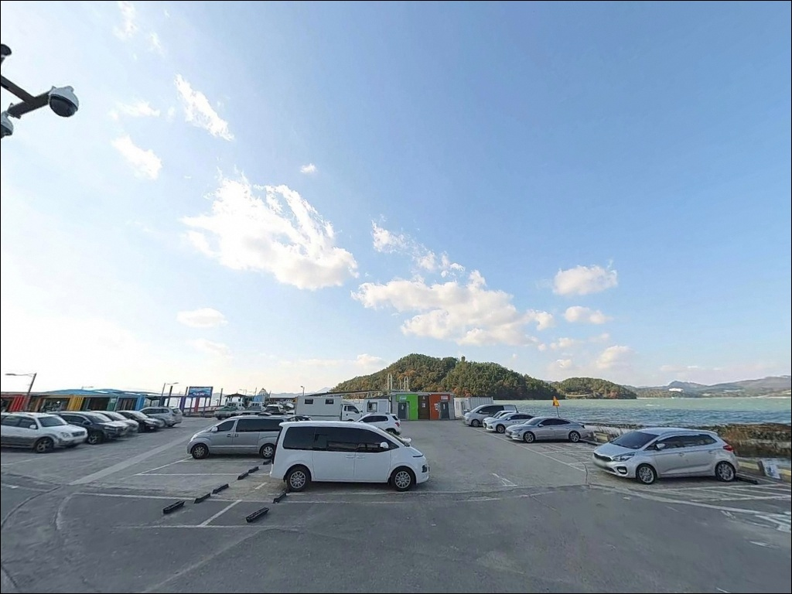
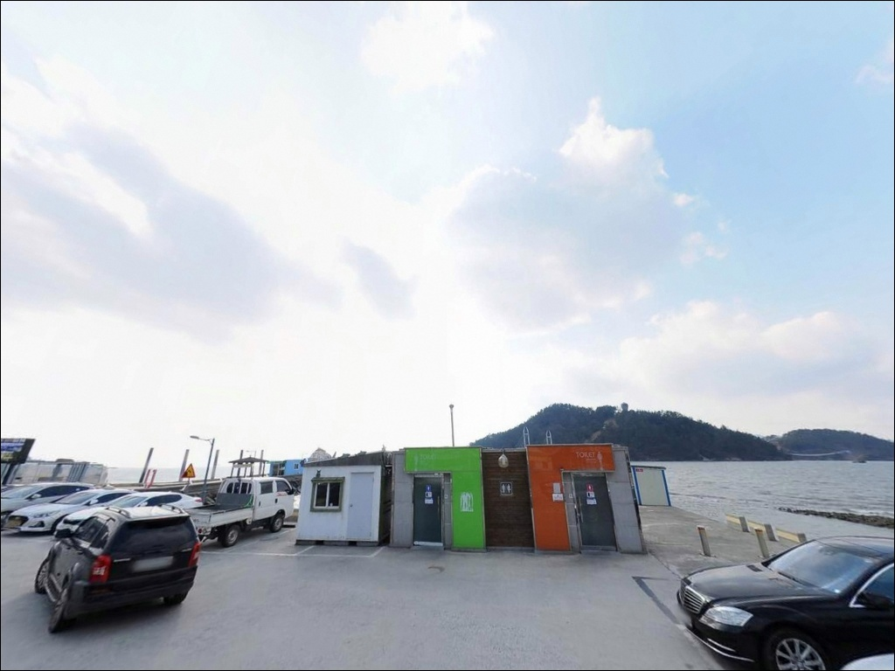
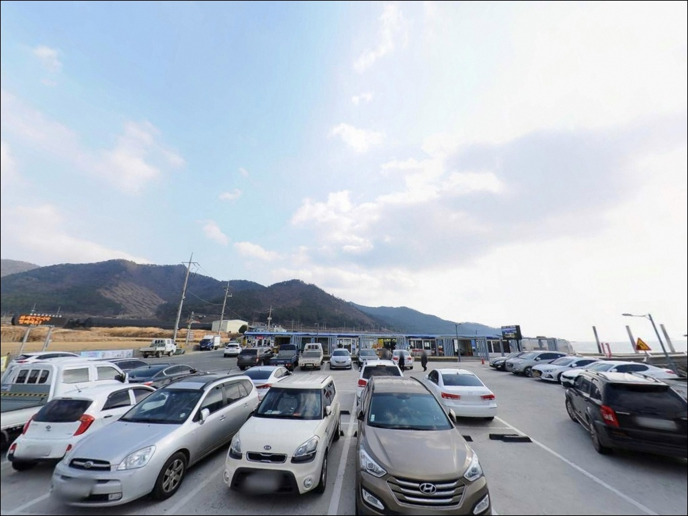
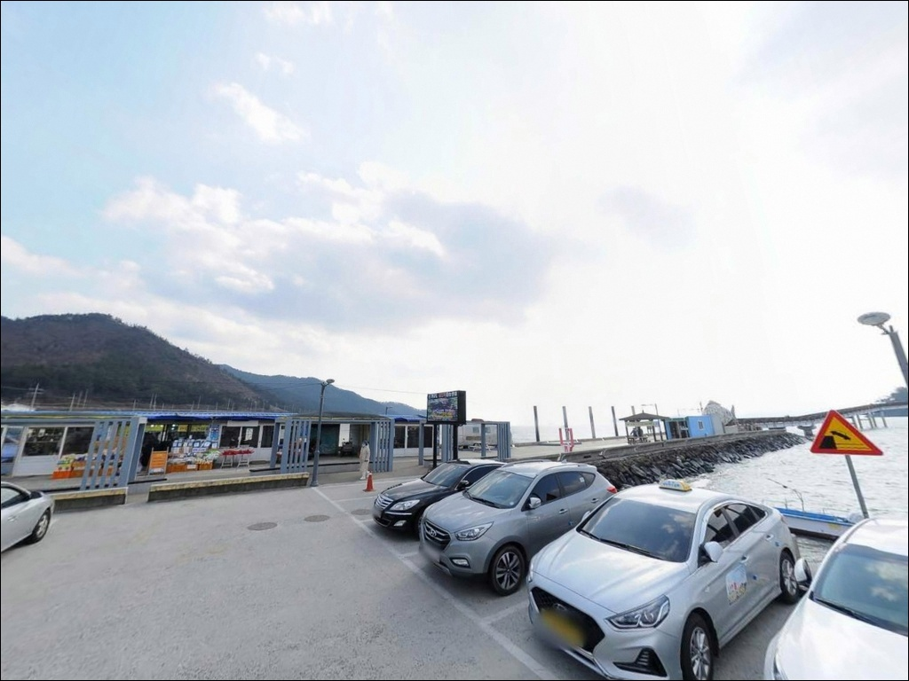
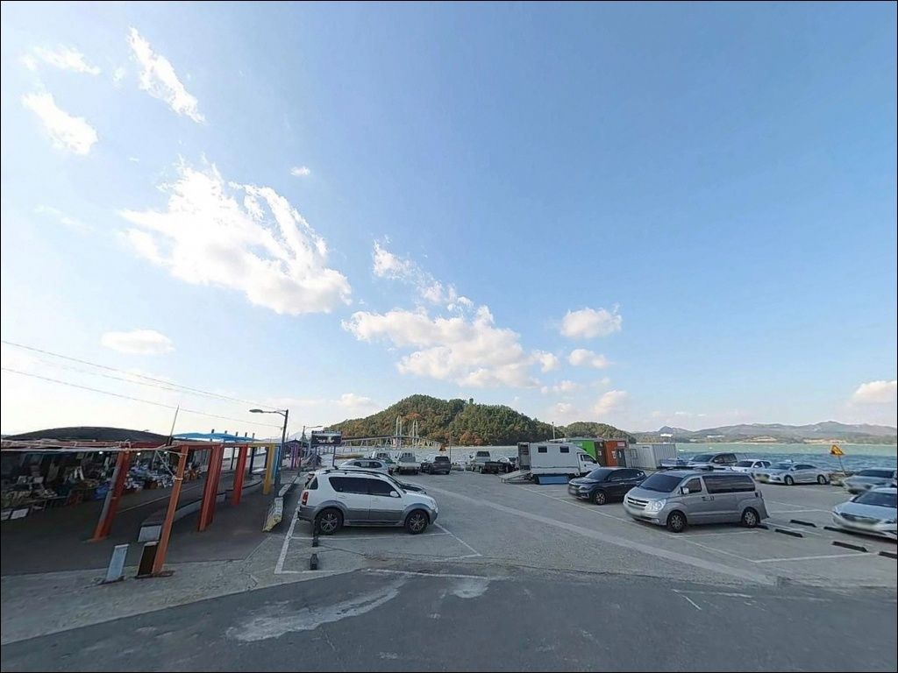
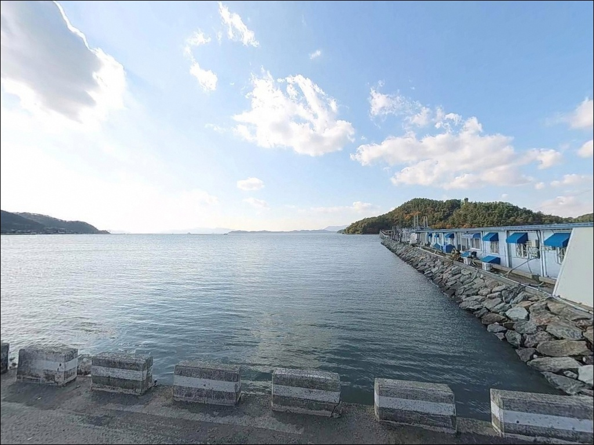
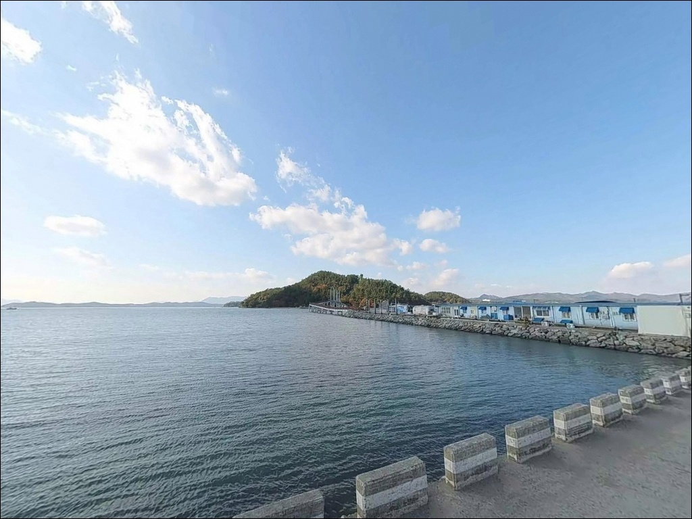
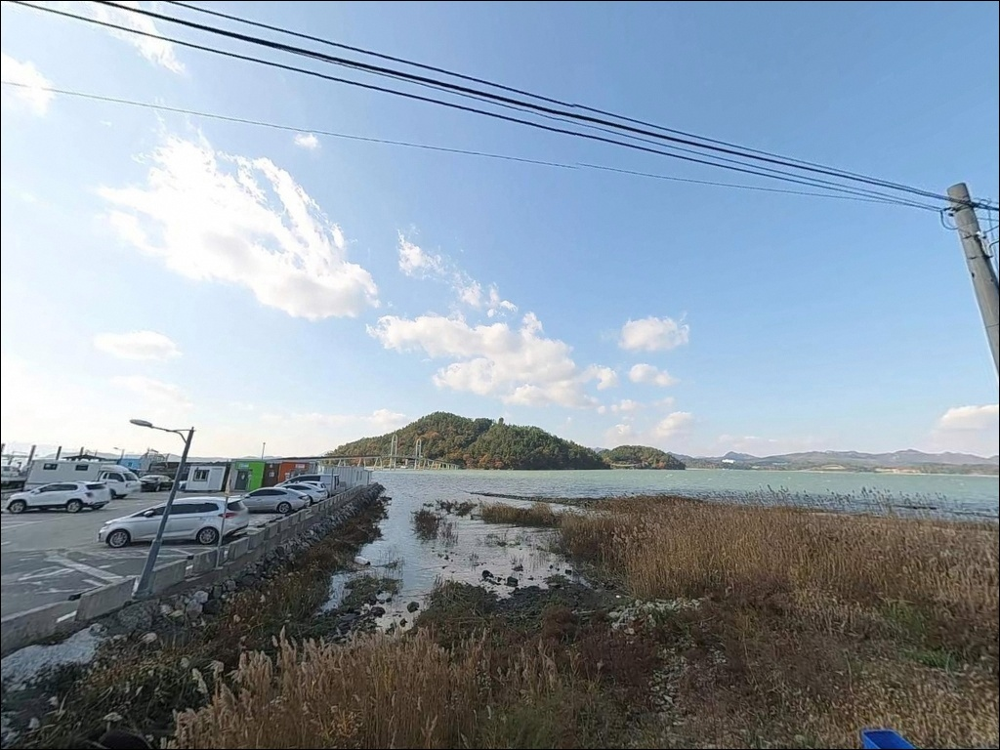

이 페이지에는 광고(제휴 링크 포함)가 있으며, 광고 링크를 통해 구매하면 운영자가 판매 수익 또는 수수료를 받을 수 있습니다. 포인트 사진: 카카오맵 스카이뷰·로드뷰. 이 페이지의 지도·사진 이미지는 카카오맵의 실제 서비스 이미지와 다를 수 있습니다.


가우도청자다리 주차장, 전남 강진군 방파제 테트라포드 피한 안전 차박 낚시 포인트
포인트 안내
가우도청자다리 주차장
전남 강진군 대구면 저두리 320-2
청자다리 주차장에 차를 대고
바로 낚시 자리를 잡으려 하면
당황하는 경우가 생깁니다.
이 포인트는 주차장 자체가 낚시 장소가 아니라
438m 청자다리를 건너 가우도 섬 안의
복합낚시공원으로 진입하는 육지 측 베이스입니다.
낚시 방식과 입장 구조가 일반 방파제 포인트와 다르며,
운영 기간과 시간 조건이 방문 성패를 결정합니다.
이 글은
가우도청자다리 주차장의
진입 및 주차 여건, 복합낚시공원 운영 조건,
물때 기준, 낚시 방식별 공략 조건에 집중합니다.
조황 단정이나 특정 어종 보장은
이 글의 범위에 포함되지 않습니다.

1. 진입 동선과 포인트 접근성
강진읍 방면에서 22번 국도를 타고
대구면 방향으로 이동한 뒤
저두리 방향 지방도로 연결됩니다.
주차장까지 전 구간 포장도로이며
비포장 구간과 급경사 구간이 없습니다.
관광버스가 수시로 드나드는 왕복 2차선 도로와
연결되어 있어 대형 차량도 진입에 무리가 없습니다.
주차장은 아스팔트 포장된 대형 공영주차장으로
구획이 넉넉히 설정되어 있습니다.
장애인 주차구역이 별도로 마련되어 있으며
캠핑카나 트레일러도 회차와 주차에
제약이 없는 수준의 공간입니다.
주차 요금은 무료입니다.
다만 주말과 성수기에는 관광객 차량이 집중되어
진입로 주변까지 일렬 주차가 발생합니다.
낚시 목적이라면 평일 이른 시간대 진입이
주차 여건 면에서 유리합니다.

2. 차박 환경과 야간 체류 여건
청자다리 주차장은 관광지 공영주차장으로
가로등과 청자다리 조명이 설치되어 있어
야간에도 일정 수준의 조도가 유지됩니다.
주간 및 주말에는 관광객 차량 통행이 빈번하며,
심야 시간대에도 유동 인구가 완전히 끊기지 않는
환경입니다.
주차장 주변에 카페, 식당, 포장마차가 밀집해 있어
편의성은 높지만
독립적인 야간 공간을 원하는 차박 목적이라면
이 포인트가 맞지 않습니다.
낚시를 위해 현지에서 하룻밤 머무는
베이스캠프 성격으로 활용하는 것이
이 주차장의 실질적인 용도입니다.
취사보다는 스텔스 차박 방식을 권장하며,
쓰레기는 전량 수거하는 것이 기본 매너입니다.
강진만 내만이라 파도 소음은 거의 없으나
기상 급변 시 강풍의 영향을 받을 수 있으므로
기상 예보 확인은 출발 전에 마쳐야 합니다.


3. 주변 편의시설 및 인프라 현황
청자다리 주차장 인근에는
관광안내소, 카페, 음식점, 포장마차가
다리 입구를 중심으로 형성되어 있습니다.
기본 식음료 조달이 현장에서 가능하며
공중화장실도 주차장 내에 상시 개방되어 있습니다.
관리 상태는 관광지 수준으로 양호한 편입니다.
반경 3km 이내 대구면 소재지에
생활 편의시설이 일부 갖춰져 있습니다.
고려청자박물관 방면 도로를 따라 식당이 있고
대구면 남부농협 주유소도 이용 가능합니다.
응급 상황 발생 시 강진의료원은 강진읍 소재이므로
이동 거리를 미리 파악해두는 편이 좋습니다.

4. 가우도 낚시공원 이용 전에 반드시 확인해야 할 운영 조건
가우도 복합낚시공원은
매년 5월부터 11월까지만 운영되며
운영 시간은 일출 후부터 일몰 전까지입니다.
야간 낚시는 이 포인트에서 불가하므로
밤낚시 목적의 방문은 계획 단계에서 제외해야 합니다.
이용료는 성인 기준 1만~1.5만 원 수준이며
청소년은 별도 요금이 적용됩니다.
구명조끼 착용이 의무이며
미착용 시 입장 자체가 불가합니다.
낚시 장비와 미끼는 현장에서 대여·구매가 가능하여
장비 없이 방문해도 이용에 지장이 없습니다.
운영 주체는 가우도 마을회이며
강진군이 위탁 관리합니다.
가우도 복합낚시공원은 5월부터 11월까지 일출 후부터 일몰 전까지만 운영되므로,
야간 낚시 계획은 이 포인트에 해당하지 않습니다.
물때는 방문 전 바다타임에서
저두리 기준으로 반드시 확인합니다.
강진만은 조석 간만의 차가 크기 때문에
간조 시에는 연안 갯벌이 넓게 드러나
낚시 여건이 크게 떨어집니다.
만조 전후를 기준으로 입장 시각을 잡는 것이
이 포인트 조과의 기본 전제입니다.

5. 지형 기반 낚시 여건 분석
강진만은 탐진강이 남해로 유입되는
기수 내만 구조입니다.
가우도는 만의 중간에 자리 잡고 있으며
청자다리가 육지 저두리와 섬을 잇는 구조입니다.
외해 영향이 거의 없는 내만형 조건으로
파도와 바람 영향이 적고 수면이 안정됩니다.
복합낚시공원은 가우도 북쪽 해안에
조성된 전용 데크·발판 구조의 낚시터입니다.
수심은 간조 기준 1~3m 내외이며
뻘과 모래가 혼합된 바닥 구조입니다.
사리 물때에는 유속이 빨라지고
조금 전후에는 조류가 안정되어
채비 운용이 편해집니다.
강진만 내만 구조에서는 만조 전후 2~3시간이
조류가 가장 활성화되는 시간대로,
이 타이밍을 기준으로 출발 시각을 역산하는 것이 효율적입니다.
강진군은 이 일대 해역에 감성돔 치어 방류 사업을
매년 실시하고 있습니다.
이 일대에서 기대해 볼 수 있는 어종은
감성돔, 숭어, 농어, 도다리, 망둥어, 붕장어 수준이며
봄~가을 시즌이 활성도 면에서 높은 편입니다.
출조 전 최신 조황은 반드시 검색해 보시기 바랍니다.


6. 포인트에 어울리는 낚시 스타일
복합낚시공원 데크·발판 구조 특성상
갯바위 직접 진입은 없습니다.
이 조건에서 가장 잘 맞는 방식은
원투낚시입니다.
내만 조류가 비교적 약하고
수로 중앙의 깊은 골을 향해 투척하는 방식으로
바닥층 어종을 노릴 수 있습니다.
참갯지렁이·청갯지렁이 미끼가 적합하며
가을철 감성돔, 숭어, 망둥어가
주요 대상이 됩니다.
릴찌낚시도 이 포인트 여건에 잘 맞습니다.
조류 영향이 약한 내만 환경에서
서서히 흘리는 방식으로 운영하면
감성돔과 숭어의 중층 반응을 기대할 수 있습니다.
민장대낚시도 현실적인 선택지입니다.
낚시 장비 대여 서비스가 현장에서 제공되어
가족 단위 방문객이나 입문자도
별도 준비 없이 이용할 수 있습니다.
데크 주변에서 가볍게 망둥어와 붕장어를
노리는 방식이 이 조건에 어울립니다.

7. 대안 포인트와 플랜 B 동선
복합낚시공원 운영 기간 외이거나
관리형 낚시터보다 자유로운 방파제 낚시를
원한다면
마량항이 가장 현실적인 대안입니다.
청자다리 주차장에서 차량으로 약 15분 거리이며
강진군에서 국가어항으로 지정된
방파제 도보 낚시 거점입니다.
마량항 방파제는 산책로가 정비되어 있고
발판이 안정적입니다.
이 일대 해역에서는 감성돔, 농어, 우럭, 전어가
기대 어종으로 꼽힙니다.
선상낚시를 원한다면 마량항 출항 낚시 어선을
이용하는 방식이 현실적입니다.
매년 피싱마스터스 대회가 열릴 만큼
낚시 인프라가 갖춰진 항구입니다.
차박 여건 면에서 한적한 환경을 원한다면
대구면 고노어항이 보조 후보입니다.
청자다리 주차장보다 상업시설 밀도가 낮고
어촌 분위기가 유지되어
야간 프라이버시 확보가 다소 유리합니다.

운영 구조를 이해하면
가우도청자다리 주차장이
달리 보입니다
유료 관리형 낚시공원 구조가 낯설더라도
가우도 복합낚시공원은
주차·편의시설·안전 환경이 모두 갖춰진
접근하기 편한 강진만 내만 낚시 포인트입니다.
감성돔과 숭어를 찌낚시나 원투로 노리고 싶거나
입문자와 가족 단위로
바다낚시 경험을 쌓고 싶은 분께
잘 맞는 구조입니다.
반면 야간낚시나 갯바위 자유 낚시를 원하거나
조용한 노지 차박 환경을 기대한다면
마량항이나 고노어항 쪽이 더 맞는 선택입니다.
방문 전 운영 기간·물때·구명조끼 세 가지만
확인해두면 청자다리를 건너는 발걸음이
훨씬 가벼워질 것입니다.
강진만의 고요한 내만 수면 옆에
차를 대고 하룻밤 머무는 것만으로도
낚시와 차박을 동시에 즐기기에
부족함 없는 여정이 됩니다.